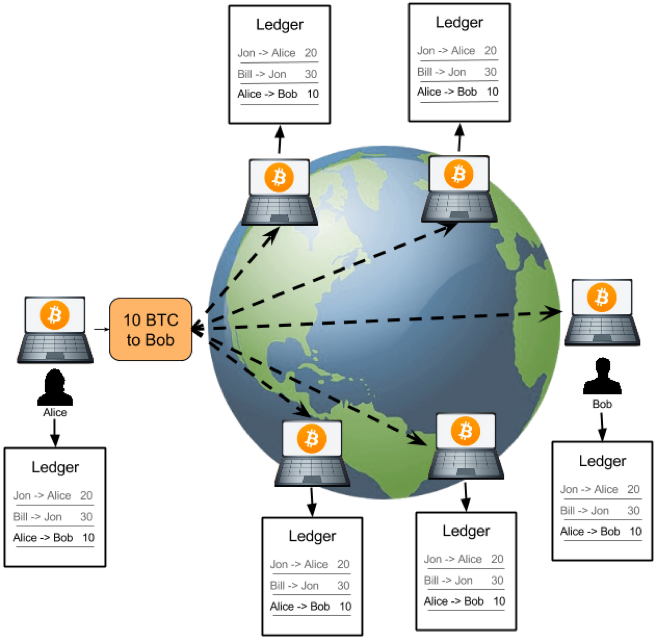

- 000 开篇词 洞悉技术的本质，享受科技的乐趣.md
- 001 程序员如何用技术变现（上）.md
- 002 程序员如何用技术变现（下）.md
- 003 Equifax信息泄露始末.md
- 004 从Equifax信息泄露看数据安全.md
- 005 何为技术领导力.md
- 006 如何拥有技术领导力.md
- 007 推荐阅读：每个程序员都该知道的事.md
- 008 Go语言，Docker和新技术.md
- 009 答疑解惑：渴望、热情和选择.md
- 010 如何成为一个大家愿意追随的Leader？.md
- 011 程序中的错误处理：错误返回码和异常捕捉.md
- 012 程序中的错误处理：异步编程和最佳实践.md
- 013 魔数 0x5f3759df.md
- 014 推荐阅读：机器学习101.md
- 015 时间管理：同扭曲时间的事儿抗争.md
- 016 时间管理：投资赚取时间.md
- 017 故障处理最佳实践：应对故障.md
- 018 故障处理最佳实践：故障改进.md
- 019 答疑解惑：我们应该能够识别的表象和本质.md
- 020 分布式系统架构的冰与火.md
- 021 从亚马逊的实践，谈分布式系统的难点.md
- 022 分布式系统的技术栈.md
- 023 分布式系统关键技术：全栈监控.md
- 024 分布式系统关键技术：服务调度.md
- 025 分布式系统关键技术：流量与数据调度.md
- 026 洞悉PaaS平台的本质.md
- 027 推荐阅读：分布式系统架构经典资料.md
- 028 编程范式游记（1）- 起源.md
- 029 编程范式游记（2）- 泛型编程.md
- 030 编程范式游记（3） - 类型系统和泛型的本质.md
- 031 Git协同工作流，你该怎样选.md
- 032 推荐阅读：分布式数据调度相关论文.md
- 033 编程范式游记（4）- 函数式编程.md
- 034 编程范式游记（5）- 修饰器模式.md
- 035 编程范式游记（6）- 面向对象编程.md
- 036 编程范式游记（7）- 基于原型的编程范式.md
- 037 编程范式游记（8）- Go 语言的委托模式.md
- 038 编程范式游记（9）- 编程的本质.md
- 039 编程范式游记（10）- 逻辑编程范式.md
- 040 编程范式游记（11）- 程序世界里的编程范式.md
- 041 弹力设计篇之“认识故障和弹力设计”.md
- 042 弹力设计篇之“隔离设计”.md
- 043 弹力设计篇之“异步通讯设计”.md
- 044 弹力设计篇之“幂等性设计”.md
- 045 弹力设计篇之“服务的状态”.md
- 046 弹力设计篇之“补偿事务”.md
- 047 弹力设计篇之“重试设计”.md
- 048 弹力设计篇之“熔断设计”.md
- 049 弹力设计篇之“限流设计”.md
- 050 弹力设计篇之“降级设计”.md
- 051 弹力设计篇之“弹力设计总结”.md
- 052 区块链技术 - 区块链的革命性及技术概要.md
- 053 区块链技术 - 区块链技术细节 - 哈希算法.md
- 054 区块链技术 - 区块链技术细节 - 加密和挖矿.md
- 055 区块链技术 - 去中心化的共识机制.md
- 056 区块链技术 - 智能合约.md
- 057 区块链技术 - 传统金融和虚拟货币.md
- 058 管理设计篇之分布式锁.md
- 059 管理设计篇之配置中心.md
- 060 管理设计篇之边车模式.md
- 061 管理设计篇之服务网格.md
- 062 管理设计篇之网关模式.md
- 063 管理设计篇之部署升级策略.md
- 064 性能设计篇之缓存.md
- 065 性能设计篇之异步处理.md
- 066 性能设计篇之数据库扩展.md
- 067 性能设计篇之秒杀.md
- 068 性能设计篇之边缘计算.md
- 069 程序员练级攻略（2018）：开篇词.md
- 070 程序员练级攻略（2018）：零基础启蒙.md
- 071 程序员练级攻略（2018）：正式入门.md
- 072 程序员练级攻略（2018）：程序员修养.md
- 073 程序员练级攻略（2018）：编程语言.md
- 074 程序员练级攻略：理论学科.md
- 075 程序员练级攻略（2018）：系统知识.md
- 076 程序员练级攻略（2018）：软件设计.md
- 077 程序员练级攻略（2018）：Linux系统、内存和网络.md
- 078 程序员练级攻略（2018）：异步IO模型和Lock-Free编程.md
- 079 程序员练级攻略（2018）：Java底层知识.md
- 080 程序员练级攻略（2018）：数据库.md
- 081 程序员练级攻略（2018）：分布式架构入门.md
- 082 程序员练级攻略（2018）：分布式架构经典图书和论文.md
- 083 程序员练级攻略（2018）：分布式架构工程设计.md
- 084 程序员练级攻略（2018）：微服务.md
- 085 程序员练级攻略（2018）：容器化和自动化运维.md
- 086 程序员练级攻略（2018）：机器学习和人工智能.md
- 087 程序员练级攻略（2018）：前端基础和底层原理.md
- 088 程序员练级攻略（2018）：前端性能优化和框架.md
- 089 程序员练级攻略（2018）：UIUX设计.md
- 090 程序员练级攻略（2018）：技术资源集散地.md
- 091 程序员面试攻略：面试前的准备.md
- 092 程序员面试攻略：面试中的技巧.md
- 093 程序员面试攻略：面试风格.md
- 094 程序员面试攻略：实力才是王中王.md
- 095 高效学习：端正学习态度.md
- 096 高效学习：源头、原理和知识地图.md
- 097 高效学习：深度，归纳和坚持实践.md
- 098 高效学习：如何学习和阅读代码.md
- 099 高效学习：面对枯燥和量大的知识.md
- 100 高效沟通：Talk和Code同等重要.md
- 101 高效沟通：沟通阻碍和应对方法.md
- 102 高效沟通：沟通方式及技巧.md
- 103 高效沟通：沟通技术.md
- 104 高效沟通：好老板要善于提问.md
- 105 高效沟通：好好说话的艺术.md
- 106 加餐 谈谈我的“三观”.md
- 107 结束语 业精于勤，行成于思.md
052 区块链技术 - 区块链的革命性及技术概要
才开极客时间专栏的时候，就有读者留言让我发表一下对区块链技术的一些看法。只是当时觉得区块链方面的技术一方面比较简单，感觉也没什么好说的，另一方面，我觉得还有很多更主流更能帮助大家成长的技术，所以就把区块链相关的技术文章降级处理了。
那为什么现在我又要写这个主题呢？
2010 年，我在浏览国外技术网站时，看到好多人在讨论一个叫 bitcoin 的东西，还看到有人说用几万个这个东西换了个披萨。随后，我看了一下它的白皮书，这篇不到 10 页的文档读起来还是很容易的，所以建议你读一读。
然后，我在一台电脑上尝试安装了一下，就像用 BT 或电驴下载一样，连入了这个没有服务器的 P2P 网络，下载了账本，还尝试了一下 " 挖矿 "。
花了不短的时间，记下了我的比特币里的一个区块，收到了来自系统奖励的 50 个比特币。我默默地看着这个又耗硬盘空间，又非常吃 CPU 的家伙，心里想，这什么破软件，太难用了，就删除了。（是的，这 50 个比特币也就不知道去哪了。）
记得比特币开始有价值的时候，像维基解密这样的机构为了避开被政府控制的银行，会接受比特币的捐款。2012 年的时候，比特币已经看涨了，到了 2013 年，比特币的市值已经比较高了，突破了 1000 美金。
那个时候，中国有好多人在挖矿。记得最厉害的是李笑来，他的比特币持有数量很可观，如果没有卖的话，现在就更为 " 恐怖 " 了。
在 2016 年的时候，我听说了个叫以太坊的东西。嗯，是区块链 + 代码的东西，又被叫作智能合约，这的确给予了区块链有更多的想像空间。还听说了这个项目是被 ICO 出来的，然后我就了解了一下 ICO。同年，我有一个高中同学，搞了个创业项目，据说是中国第一个 ICO 项目。当时筹到了 1000 万人民币，然后发个币上了二级市场。
再然后，2017 年的一天有人带我去见薛蛮子。听他说他在很短的一段时间内出手投了好多个和区块链相关的创业项目。见薛蛮子一周后，中国政府出台政策定性 ICO 非法，开始治理市场，清除所有一切和 ICO 相关的东西。
似乎市场应该就此冷静下来了。
2018 年 1 月 9 日，真格基金创始人徐小平在一个微信群里对他投资公司的 CEO 们说，区块链是一场伟大的技术革命。他要求大家 " 对区块链不要有怀疑，不要有迟疑，立即动员全体员工，学习如何拥抱这场革命 "。
随着徐小平这个微信截图的流出又把区块链推到了风口浪尖。我几个关系不错的做技术的朋友也跟着入坑了……各种人，认识我的，不认识我的，全都来找我，问我区块链的事，我不想关注都不成了……
所以，我想我还是在这里写上几篇文章吧。一方面，我会很客观地把区块链的技术解释出来（不是那种天马行空完全不知所云的比喻，是实实在在的技术，我保证非技术人员都一定能看得懂）, 包括区块链、非对称加密、挖矿、共识机制等。
另一方面，我会结合现有的一些金融上的交易撮合的中心化标准玩法来让你来比较一下中心化和去中心化的不同。最后，我会谈一些我的观点，可能会上升到哲学层面。当然，最后还是由你自己来做判断。
下面是这几篇文章要回答的关键问题。
- 为什么区块链技术会成为热点技术？它解决了什么问题？
- 区块链（blockchain）究竟是个什么技术？这里，我会带你抽丝剥茧看看区块链技术，看看区块链是如何做到不可篡改、什么是 " 挖矿 "，以及为什么要 " 挖矿 "，全是技术干货。
- 去中心意味着没有一个公司，没有公司就意味着没有服务器，没有服务器的软件是怎样提供服务的？这里主要会讲一下无中心化的系统是怎么运作的，是怎么达成一致的？
- 智能合约是个什么鬼？它有什么意思？
- 简单地谈一谈金融，你可以自行思考一下，区块链虚拟货币是否有可能取代现有的金融服务？并重组整个社会架构？
- 最后，我会提出几个逻辑问题来让你独立思考一下 " 去中心化 " 的优劣，以及相关的逻辑和哲学问题。
闲言少叙，我们开始。
区块链技术的革命性
你一定看过太多的文章用各式各样的比喻来讲区块链技术是什么，以及为什么牛逼。在这里，我尝试用我的话来说明一下区块链技术的革命性。
说区块链必然要谈比特币，比特币是一种数字货币。但最令人叫绝的是，比特币号称有下面几个特性。
- 去中心化。这意味着没有中心的服务器，不受某个人的控制，整个系统直接由用户端的电脑构成。这样的技术难度是非常大的，并不像手机 App 或是小网站一样，你想发布就发布，这需要有人来跟你一起玩。
- 数据防篡改。所有交易记录全量保存，并公开给所有的人，而且还被加密和校验。并不是数据不能被篡改，而是数据被篡改的成本非常大。（有人借此说区块链的不可篡改可以解决人类的信任问题，这个并不一定。）
- 固定的发行量。不会像国家中央银行那样乱印钞票，造成通货膨胀。
这几个东西加在一起，就可以让那些想作弊的人，尤其是那些有权有势有钱的大公司大组织很难作恶。因为 " 去中心化 " 这个事，从本质上来说，造就了整个系统不再需要这些个大的公司和组织，人民可以达到真正意义上的自治，这些个大公司都会倒闭。
简单说来，相信区块链的人都相信，可以通过区块链这个技术来改变整个社会的组织形成——不再需要银行、中介机构、电商平台、支付宝等中间机构，人们可以通过一个不受任何人控制和操作的 P2P 金融系统，进行完全自由和可信的交易。
当然，反区块链的人的观点也很明确。他们认为，所谓的去中心化看似很美好，但实则不可能。而且从目前的区块链的应用来看，也没有颠覆什么，连迹象都没有。反而，大家都在疯狂地炒作概念，没有实质的价值。像 ICO 和交易所这样的东西里面充满了大量的投机主义，泡沫非常大。
于是，这种巨大无比的争议性，把人们分割成了两种阵营，把区块链推向了火热。对此，我这几篇文章会把区块链这个技术一点一点讲解清楚，让你自己判断。
其实，对于投资机构来说，在逻辑上，我觉得他们应该感到恐慌才对，因为他们也是被革命的对象啊。如果某个事不再需要公司，人们自治，那么投资人怎么投资啊？投资的实体都没了啊，怎样有回报？
如果说，投资机构想扶植一个小公司用区块链技术把大公司干掉，那在逻辑上也说不通啊，因为如果你投资的公司也可能被别人很容易地颠覆掉，那么你怎么可能会投资呢？
相关的逻辑问题，我们会放在最后来讨论，还是先看一下区块链的技术。下面会有非常详细的技术细节，如果你不关心技术细节，那么可以只看 " 技术概要 " 一节。
技术概要
首先，我们先看一下中心化和去中心化的业务流是什么样的。
下面的图给出了 " 传统中心化 " 和 " 去中心化 " 的对比。

中心化结构（大家都将记账权交给银行）
 去中心化的交易
去中心化的比特币交易处理流程如下。
- 首先，需要交易的用户把交易传到网络中。
- 然后，网络上有些机器叫记账结点，它们通过比拼计算力的方式竞争记账权。这也叫 " 挖矿 "。
- 获得记账权的结点，会把待记账的交易进行计算打包，并向全网广播。收到新的记账包的结点会对其进行验证，验证通过后加入自己的区块。
注意，整个比特币的世界是没有服务器的，其完全是靠大家用自己的电脑拼出来的一个分布式系统。既然这些电脑都是大家自己的，所以这种 P2P 的去中心化网络有一个前提假设——“网络中的任何结点都是不能信任的，它们中的任何一个都可能会作恶”。
基于这个前提假设，这个分布式的账本系统就需要有如下的设计：任何人都可以拿到所有的数据。所以，数据要能很容易被验证是合法的没有被修改过的，而且也要是很难被人修改的。
基于这个设计，比特币使用了两个比较大的技术：“区块链技术 "和" 工作量证明共识机制”。
区块链
第一个技术就是区块链，区块链又叫 blockchain，其中有一个一个的区块，每个区块中包括着一组交易信息，然后，每一个区块都会有一个 ID（或是一个地址），这些区块通过记录前一个区块的 ID 来形成一条链。下面的图有助于你形象地理解这一概念，感兴趣可以看看。

但需要注意下面这几个方面。
- 每个块的 ID 都是通过其内容生成的，所以，只要是内容有一丁点儿的变化，这个 ID 都会完全不一样。
- 而生成 ID 的内容中还包括上一个块的 ID。**于是只要上一个块的内容变了，其 ID 也要跟着变（不然就不合法了），那么后面指向这个块的 ID 也要变。于是，后面指向这个块的 ID 也要重新计算，而变成另一个，这样就会形成一个连锁效应——一个块被修改，后续的所有块都要跟着一起改。**于是导致了修改成本的提升。
- 这种一处改，处处改的方式，并不代表不能篡改，而只是让修改面比较大，让你的改动麻烦一点。
- 越旧的区块的篡改会造成越大面积的修改，于是越旧的区块就不容易篡改，就越安全。反之，越新的区块就越不安全。
而真正让区块链做到非常难篡改的是工作量证明的共识机制。
工作量证明共识机制
我们知道，分布式网络的数据一致性是最难的问题了，在这种去中心化的网络集群下就更难了。其中最大的本质差别是，**一个公司内的分布式系统中的结点是被假设成可信任的，而在去中心化的网络下，结点要被假设成不可信任的。**想象一下，在一堆不可信的结点上做一致性是不是一件很难的事？
这里，需要解决几个与 " 数据一致性 " 相关的问题。
- **以谁的数据为准？**任何结点都可以修改自己所下载的账本，也就是任何一个人都可以伪造账本。那么，谁的数据才是对的？**在去中心化的网络下，我们只能认为，大多数人认识的数据是对的。**只要我控制了一半以上的结点，我让这 " 大多数人 " 伪造同一份账本，那么相当于整个账本都被我修改过来了。因为在没有服务器的去中心化的网络下，所谓的真理只不过是大多数人同意的东西。
- **" 大多数人 " 的问题。**是人数吗？在网络世界里，我可以用程序模拟出无穷多的 " 人 " 出来投票，所以，用人数来解决去中心化的问题，在分不清是人还是狗，是生物还是程序的计算机世界里，是一件很愚蠢的事。
- **意见分歧问题。**如果在同一个时刻，有多个人都在告诉其它人，这账应该这么记。比如说，有人说，左耳朵转了 10 块钱给了耗子叔，有人说，左耳朵转了 20 元给了耗子叔，还有人说，左耳朵没有花钱，是陈皓花的钱。而且，他们的数据都合法，那么，整个网络应该听谁的？
是的，这种没有人组织的玩法真是乱啊。
**为了解决这几个问题，比特币使用了 Proof-of-Work 工作量证明机制，也就是 " 挖矿 "。所谓的 " 挖矿 " 其实就是用大规模的计算来找到一个符合系统要求的区块 ID。**要找到符合条件的区块 ID 只能通过暴力穷举的方式，所以要付出大量的系统计算资源和电力。
这样一来，我们用这种 " 极度消耗计算力 " 的方式来提高成本，从而有效地遏制或解决下面几个问题。
- 修改几乎变得不可能。试想，如果生成一个区块需要大量的长时间的计算力。也就是在世界上最好的电脑集群下计算 10 分钟才能打好一个包，那么，当我们要去修改数据内容的时候，这个过程也是一样的。前面说过，如果你要伪造一个块，那么你就要修改后面所有的块，修改一个块的成本如此之高，那么修改整个链的成本也就非常之高了。
- 能掌握 51% 的算力的人也变得几乎不可能。除了伪造一条链的成本很高，还要控制大多数人的算力，这意味着，是一个非常大的金钱的投入。这两个难度加起来，几乎不太可能。
- 解决分歧。一方面，这么大的工作量找出来的区块 ID，已经有效地降低了大家有意见冲突的概率。另一方面，就算是出现了合法冲突的区块（同时出现了多个合理的区块，即区块链出现分支 / 分叉），也就是多个合法的账本。而因为挖矿的成本太高，导致要同时跟进多个账本是不可能的，所以矿工们只能赌跟其中一个。大多数人所选择的那一个分支的链就会越来越多，于是另外一边也就无人问津，从而作废了。
你别看 Proof-of-Work 成本这么高，还这么耗电不环保，但是，这是目前去中心化系统中最安全的玩法。（其中的相关细节可以查看后面的 " 挖矿 " 和 " 去中心化的共识机制 "。）
好的，上面就是区块链的相关技术概要。如果想了解相关的技术细节，你可以继续看后面的内容。如果不感兴趣，可以选择跳过。